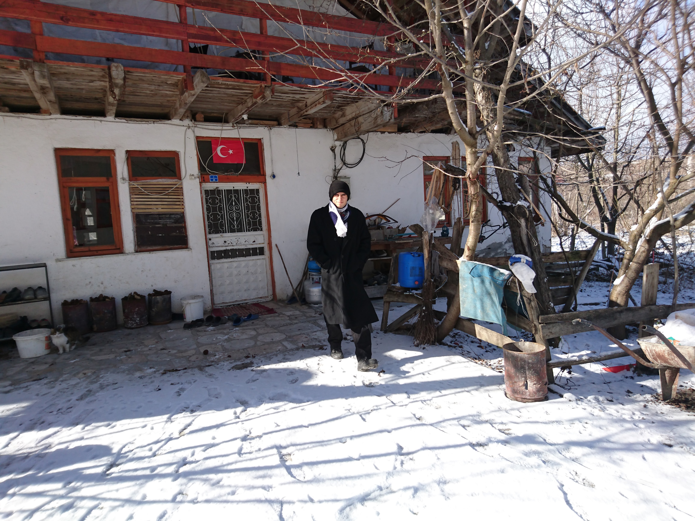
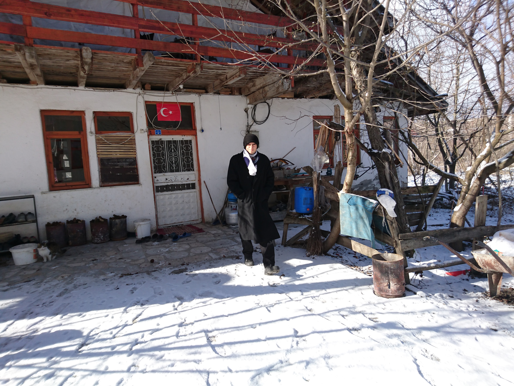

KÖY: Tatilleri ve izinli olduğum zamanları büyüyüp yetiştiğim köyde doğayla ve hayvanlarla iç içe vakit geçirerek değerlendiririm.
GÜREŞ: Lisedeyken serbest stil güreş eğitimi aldım. Resim final maçında 1. olmamdan hemen önce çekildi.
YÜZME: Fırsat buldukça yüzmekten hoşlanırım. Bunun için yazları denizde ve kışlarıda havuzda yüzmeye gayret ederim.
KÖY: Tatilleri ve izinli olduğum zamanları büyüyüp yetiştiğim köyde doğayla ve hayvanlarla iç içe vakit geçirerek değerlendiririm.
İCAT: Aklımıza gelen ve düşünerek birşeyler üretmekten çok zevk alırım.
KİCKBOX: Okul çıkışlarında kickbox eğitimi aldım. Bunu yanı sıra kendim copeira, muay tai, taekwondo ve boks gibi dallarda antrenmanlar yaptım.